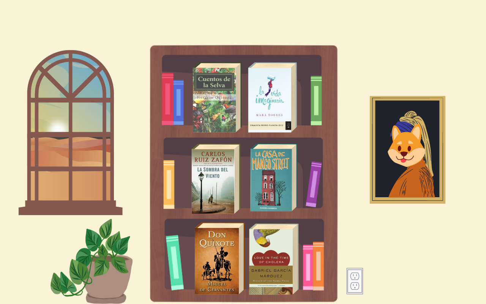

Recommended Books
By reading interesting content in the language you want to learn — content that grabs and holds your attention — you can pick up all the vocabulary and grammar you need to know. When you read interesting content in meaningful chunks, your brain naturally absorbs word meanings and grammar rules.
1. Cuentos de la selva (Jungle Tales) - Horacio Quiroga
Reading Level: Easy | Genre: Adventure Fiction
Collection of eight short stories in which Quiroga captures the magic of the jungle. A place where snakes throw glamorous parties with flamingos, stingrays join forces to fight off man-eating jaguars, and a giant tortoise carries a wounded man on its shell for hundreds of kilometers to bring him to safety.
2. La vida imaginaria (The Imaginary Life) - Mara Torres
Reading Level: Easy | Genre: Romantic Fiction
Meet Fortunata Fortuna, at a crossroads but ready to make her mark on the world. Nata’s world fills with unanswered questions when Beto leaves her. But time doesn’t stop, and the stories that Nata begins to tell herself about her own life lead her to a place where everything becomes possible again.
3. La Sombra Del Viento (The Shadow of the Wind) - Carlos Ruiz Zafón
Reading Level: Intermediate | Genre: Mystery Fiction
Barcelona, 1945: A city slowly heals in the aftermath of the Spanish Civil War, and Daniel, an antiquarian book dealer’s son who mourns the loss of his mother, finds solace in a mysterious book entitled The Shadow of the Wind, by one Julián Carax. But he makes a shocking discovery: someone has been systematically destroying every book Carax has written.
4. La casa en Mango Street (The House on Mango Street) - Sandra Cisneros
Reading Level: Intermediate | Genre: Classic Literature
The House on Mango Street is a 1984 novel by Mexican-American author Sandra Cisneros. Structured as a series of vignettes, it tells the story of Esperanza Cordero, a 12-year-old Chicana girl growing up in the Hispanic quarter of Chicago. Elements of the Mexican-American culture and themes of social class, race, sexuality, identity, and gender are interwoven throughout the novel.
5.Don Quixote - Miguel de Cervantes
Reading Level: Advanced | Genre: Historical Epic Novel
The plot revolves around the adventures of a member of the lowest nobility, an hidalgo from La Mancha named Alonso Quijano, who reads so many chivalric romances that he either loses or pretends to have lost his mind in order to become a knight-errant (caballero andante) to revive chivalry and serve his nation, under the name Don Quixote de la Mancha.
6. El Amor en los Tiempos del Coler (Love in the Time of Cholera) - Gabriel Garcia Marquez
Reading Level: Advanced | Genre: Magical Realism
In their youth, Florentino Ariza and Fermina Daza fall passionately in love. When Fermina eventually chooses to marry a wealthy, well-born doctor, Florentino is heartbroken, but he is a romantic. As he rises in his business career he whiles away the years in 622 affairs—yet he reserves his heart for Fermina.